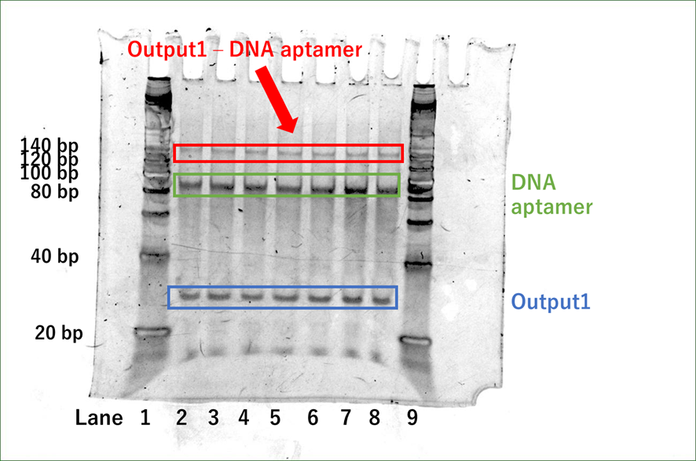

Simulation
Experimental Items
- 3-1. Electrophoresis in Hybridization Buffer
- 3-2. Electrophoresis in Sterile Water
- 3-3. Electrophoresis at 2x dilution of sample concentration and 1 × TAE/Mg2+ buffer
- 3-4. Electrophoresis in 0.5 × TBE
- 4-1. Electrophoresis in C4-HSL at different concentrations
- 4-2 Electrophoresis in excess amounts of C4-HSL
1. Preparation of hybridization buffer
【Method】
The hybridization buffer was prepared using 10 × PBS (-), 4M MgCl2, and sterile water in the following amount.1) Note that the 10 × PBS (-) used in this experiment already contains more than 100mM NaCl, so the 1mM NaCl described in the paper1) was not used. On the other hand, for Mg2+, the preparation was performed to match the ratio. After preparation, the pH was checked.
Preparation amount
| 10 × PBS (−) | 1mL |
| 4M MgCl2 | 10mL |
| Water | 89mL |
| Total | 100mL |
2. Hybridization of DNA aptamer (Pool99) + Output1
【Method】
First, DNA Aptamer (Pool99) and Output1 were prepared to 1200nM with hybridization buffer. After preparation, DNA Aptamer (Pool99) (20 μL) was denatured at 95˚C for 5 min and cooled to 4˚C using a PCR thermal cycler. DNA Aptamer (Pool99) (20 μL) and Output1 (20 μL) were then mixed in a 1 : 1 ratio, and the sample was set in a PCR thermal cycler at 53˚C for 30 min, followed by 48˚C for at least 4 hr. The mixture was then held at 43˚C for 30 min and 38 ˚C for 4 hr.1)
Preparation amount
C4-HSL Aptamer (99bp)
| C4-HSL Aptamer | 0.48μL |
| Hybridization buffer | 39.52μL |
| Total | 40μL (1200nM) |
Output1 (C50, 32bp)
| C50 | 0.48μL |
| Hybridization buffer | 39.52μL |
| Total | 40μL (1200nM) |
3. Confirmation of double strand formation by electrophoresis (PAGE)
This experiment is to confirm the hybridization of DNA Aptamer (Pool99) and Output1. Hybridization of the DNA Aptamer (Pool99) and Output1 was confirmed by electrophoresis (PAGE).
First, polyacrylamide gels were prepared using 10 W/ V.% Acrylamide Bis Mixed Solution (29 : 1), 1 × TAE/ Mg2+ buffer and initiator (APS + TEMED). Electrophoresis was then performed.
3-1. PAGE in Hybridization Buffer
【Experimental Procedure】
First, polyacrylamide gels were prepared by mixing 10W/ V. % Acrylamide Bis Mixed Solution (29 : 1), 1 × TAE/ Mg2+ buffer and initiator (APS + TEMED) in the following preparation amounts. Then, electrophoresis was performed at 150V, 15mA, 35min.
Preparation amount
| 10W/ V. % Acrylamide Bis Mixed Solution (29 : 1) | 10mL |
| APS | 100μL |
| TEMED | 10μL |
【Results and Discussion】
The results of Experiment 3-1 are shown in Fig.1
Fig.1 PAGE analysis
(lane 1: ladder (20bp, 7µL), lane 2: Output1 (600nM, 15µL), lane 3: DNA Aptamer (Pool99) (600nM, 15µL ), lane 4: Output1-DNA Aptamer (Pool99) (600nM, 15µL))
Fig.1 shows that lane 1 prepared with sterile water migrated well, whereas lanes 2, 3, and 4 prepared with hybridization buffer did not. This could be due to the high salt concentration in the hybridization buffer. Therefore, we thought that there might be a problem with the hybridization buffer. We then performed electrophoresis under equivalent conditions, using sterile water for lanes 2 and 3, and hybridization buffer in lane 4 in Experiment 3-2.
3-2 Electrophoresis in Sterile Water
【Method】
The polyacrylamide gel was prepared under the same conditions as those described earlier for electrophoresis in hybridization buffer, and electrophoresis was performed at 150V, 15mA, 35min.
【Results and Discussion】
Fig.2 shows the results of Experiment 3-2.
(Lane 2 and 3 are done with sterile water, and lane 4 is done with hybridization buffer.)
Fig.2 PAGE analysis
(lane 1: ladder (20bp, 7µL), lane 2: Output1 (600nM, 15µL), lane 3: DNA Aptamer (Pool99) (600nM, 15µL), lane 4: Output1-DNA Aptamer (Pool99) (600nM, 15µL) )
Fig.2 shows that the cells in lanes 1, 2, and 3 in sterile water migrated well, whereas those in lane 4 did not. While the peaks in lanes 1 and 2 appeared clear, a white peak was observed in lane 3, where the peak of DNA Aptamer (Pool99) should have appeared. In addition, broad peaks were observed throughout the lanes. Presumably, this is due to the high concentration of the samples. Therefore, the sample concentration was diluted 2-fold, the buffer was changed to 1 × TAE/Mg2+, and electrophoresis was performed again in Experiment 3-3.
3-3. Electrophoresis at 2x dilution of sample concentration and 1 × TAE/Mg2+ buffer
【Method】
The polyacrylamide gel was prepared under the same conditions as those described earlier for electrophoresis in hybridization buffer in prior experiments., and electrophoresis was performed at 150V, 15mA, 35min.
【Results and Discussion】
Fig.3 shows the results of Experiment 3-3.

Fig.3 PAGE analysis
(lane 1: ladder (20bp, 7µL), lane 2: Output1 (300nM, 15µL), lane 3: DNA Aptamer (Pool99) (300nM, 15µL), lane 4: Output1 - DNA Aptamer (Pool99) (300nM, 15µL), lane 5: ladder (20bp, 7µL))
In Fig.3, broad peaks were observed in lanes 2, 3, and 4. This might be because the amounts of loaded solutions were too large. Therefore, the next step was to reduce the volume of liquid flowing into the wells and to perform electrophoresis with TBE as the buffer. Therefore, the next step was to reduce the volume of liquid flowing into the wells and to perform electrophoresis with TBE as the buffer, which has a higher resolution than TAE.
3-4. Electrophoresis in 0.5 × TBE
【Method】
The polyacrylamide gel was prepared under the same conditions as those described earlier for electrophoresis in hybridization buffer, and electrophoresis was performed at 150V, 15mA, 35min.
【Results and Discussion】
Fig.4 shows the results of Experiment 3-4.
Fig.4 PAGE analysis
(lane 1: ladder (20bp, 7µL), lane 2: Output1 (300nM, 7.5µL), lane 3: DNA Aptamer (Pool99) (300nM, 7.5µL), lane 4: Output1 - DNA Aptamer (Pool99) (300nM, 7.5µL), lane 5: ladder (20bp, 7µL))
Fig.4 shows that a single peak between 20bp and 40bp (peak 1) appeared in lane 2. Also, a single peak between 80bp and 100bp (peak 2) appeared in lane 3. In lane 4, three peaks have appeared, peak 1, peak 2, and a peak between 120bp and 140bp (peak3). Peak 1 and 2 in lane 4 are Output1 and DNA Aptamer (Pool99) that were not hybridized. Since peak 3 is the sum of peak 1 and peak 2, we confirmed the success of hybridization of Output1 and DNA Aptamer (Pool99).
4. Confirmation of Output1 release by electrophoresis (PAGE)
This experiment is to confirm the release of Output 1 when the C4-HSL (quormone) is added. The release of Output 1 with the addition of C4-HSL (quormone) was confirmed by electrophoresis (PAGE).
4-1 Electrophoresis in C4-HSL at different concentrations
【Method】
The polyacrylamide gel was prepared under the same conditions as those described earlier for electrophoresis in hybridization buffer, and electrophoresis was performed at 150V, 15mA, 35min.
【Results and Discussion】
Figure 5 shows the results of Experiment 4.
Fig.5 PAGE analysis
(lane 1: ladder (20bp, 7µL), lane 2: 0nM (7.5µL), lane 3: 25nM (7.5µL), lane 4: 50nM (7.5µL), lane 5: 100nM (7.5µL), lane 6: 200nM (7.5µL), lane 7: 300nM (7.5µL), lane 8: 600nM (7.5µL), lane 9: ladder (20bp, 7µL))
Fig.5 shows that Output1 was not released at all concentrations. This is due to the fact that the concentration of C4-HSL was too low. Therefore, the next step was to add an excess amount of C4-HSL and perform the same conditions.
4-2 Electrophoresis in excess amounts of C4-HSL
【Method】
The polyacrylamide gel was prepared under the same conditions as those described earlier for electrophoresis in hybridization buffer. Then, 1mM of C4-HSL was added and electrophoresis was performed at 150V, 15mA, 35min.
【Results and Discussion】
Fig.6 shows the results of Experiment 4-2.
Fig.6 PAGE analysis
(lane 1: ladder (20bp, 7µL), lane 2: 300nM Output1 (7.5µL), lane 3: 300nM DNA Aptamer (Pool99) (7.5µL), lane 4: 300nM Output1 - DNA Aptamer (Pool99) (7.5µL), lane 5: 300nM Output1 - DNA Aptamer (Pool99) plus 1mM C4-HSL, lane 6: ladder (20bp, 7μL))
Fig.6 shows that the peaks at 120bp to 140bp disappeared from lane 4 and lane 5. Since peaks similar to those of Output1 (32bp) and DNA Aptamer (99bp) were observed, we consider that double-stranded DNA of Output1 - DNA Aptamer (Pool99) (131bp) dissociated into single-stranded DNA of Output1(32bp) and DNA Aptamer(99bp).
It can also be seen that the Output1 (32bp) and DNA Aptamer (Pool99) peaks of lane 5 are darker in color compared to lane 4. This confirms the dissociation of Output1 - DNA Aptamer (Pool99) (131bp) into Output2 and DNA Aptamer and the release of Output2.
The hybridized double-stranded DNA of Output1 - DNA Aptamer (Pool99) was found to function as an aptamer for C4-HSL.
5. Conclusion
Initially, the double-strand formation of Output1 and DNA Aptamer (Pool99) was confirmed by electrophoresis (PAGE) using hybridization buffer. However, the salt concentration in the hybridization buffer was too high to confirm double-strand formation.
The double-strand formation was confirmed when the buffer was changed to 1 × TAE/ Mg2+. Therefore, we will change the buffer to 1 × TAE/ Mg2+ and try to confirm the release of Output1 by adding C4-HSL and checking it by PAGE in the future.